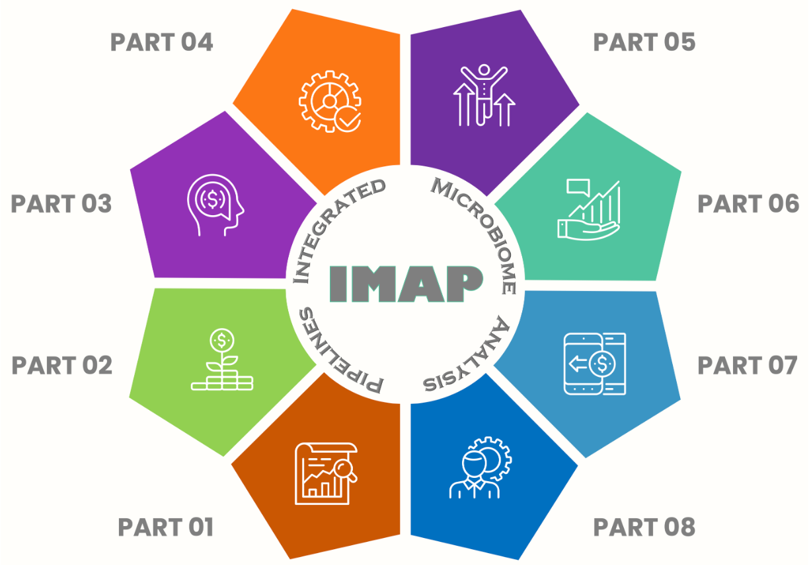

About IMAP Project
IMAP, primarily denoting Integrated Microbiome Analysis Pipelines, encompasses over eight standalone GitHub repositories.’

This project provides a systematic approach to microbiome data analysis, extending beyond conventional methods. It offers a detailed, step-by-step approach to understanding and executing systematic analyses of microbiome data. The content guides users through the application of bioinformatics tools, their functionalities, and the integration of bioinformatics pipelines. It also explores visualization techniques, specifically utilizing R and Python, in addition to Snakemake Workflows and GitHub Actions.
A central focus is placed on fostering reproducibility in microbiome data analysis, emphasizing best practices, standardized approaches, and robust tools to ensure the reliability and replicability of results. The guide instructs users on how to effectively document and share analysis pipelines, contributing to the advancement of the field.
The incorporation of practical examples, real-world datasets, and visualization techniques using R and Python equips readers to confidently analyze intricate microbiome datasets. The integration of Snakemake Workflows and GitHub Actions not only streamlines analyses but also enhances efficiency by automating repetitive tasks.
‘Systematic Microbiome Data Analysis: End-to-End User Guides’ serves as an exhaustive companion for researchers, scientists, and bioinformatics practitioners. It empowers readers to unravel the intricacies within microbiome data, leverage bioinformatics tools, implement reproducible workflows, and derive meaningful insights into the microbial world.